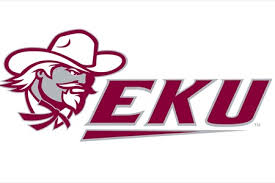

Thank you for your recent application to join us at Eastern Kentucky University's data science department to be one of our assistant professors as part of your Masters next year. I will give you a overview of our expectations.
We are happy to accommodate you starting your study with us at any time, however it would suit us better if you could start at the beginning of a semester; the start dates for each one are as follows:
Please let me know if this is ok, and if so which start date you would prefer.
You can find more information about important university dates on our website.
During your time going through the DS Masters program, we asked you to complete 5 research projects with 5 documentations of the insights you find on each. The facility will be open to you 24/7 and fill free to use any resource (Computers, books,etc), within reason. Also, you must complete each of these courses in order to receive your MS diploma:
If you have any questions about the Curriculum, please email: someguy'semail@eku.edu or call : 123-456-7890.
We ask all our students be part of Mandatory Activities that we fill will be a benefit to their well being and the community around the university. Here are the activities you must be a part of to graduate:
Hot Dog ContestIf you need any help with the camping, activity watch these videos.
Your Sincerely,
Dr. Some Guy
Eastern Kentucky University
